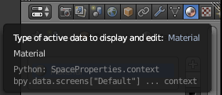
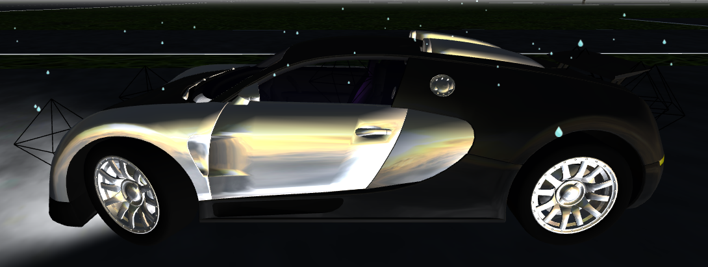

Contents - Phase 1
- Scene building and animation
- Environment
- Objects
- Car
- Weather
- Lighting
- Screenshots
- Communication with the Server
Scene building and animation
Scene building is implemented in index.html file. The Three.js object to be rendered are implemented along with providing some user interface (buttons, key listeners, etc.) and handling server data.
Handling the server responses is done by the DataModel, but in index.html all the specific listeners have to be defined and attached to the DataModel, along with the onDataProcessed and afterEachFrame functions (if needed).
Loading the environment is requested by default, when the page is loading.
Environment
Environment section includes building the terrain- and street-map.
Terrain
The terrain currently is a plane map. It is built in EnvBuilder class via addTerrain function.
The data required to build the terrain map comes from the server as bounds and heightMap data. Currently only the bounds data is received, therefore the bounds-handler invokes the terrain building.
Future implementation should combine both the bounds and heightMap data, in order to make the terrain bumpy, i.e. to apply height data.
Streets
Streets are getting build via EnvBuilder class.
A handler to the DataModel must be attached in order to build streets when the map data is received on the client.
The streets data comes in an array, in which each element represent a node with position (with x, y, z coordinates).
In DataModel a parser function is attached in order to prepare the raw data to an array of THREE.Vector3. The streets then are getting build by executing drawRoad function of the EnvBuilder.
Building the road is achieved by creating an underlying plane (white plane by default), which is wider than the road in order to provide side lines. After preparing the underlying plane the drawShape function is invoked to build it first and then build the road on the top of it (the underlying plane has the y coordinate value decrease with 1, in order to keep it under the road).
Obsolete or deprecated functions:
- add function - adding a block texture. Currently not in use, because we need an arbitrary shape texture to be added when we build the streets and a special terrain handling when we build the terrain
- drawLine function - draws middle lines on the streets. Due to a huge overload of meshes, we do not use it.
Objects
All our objects (except cars) are built in the MeshBuilder class. A 3D-Software called Blender was used to export the models as .json files, which are then loaded with a THREE.JSONLoader. More information regarding Blender is contained in the Blender part. Currently there are 27 different objects, but only 8 are in use. To get an overview over the available objects see img\textures\Blender directory.
The exported .json consists of several arrays most importantly containing the vertices, faces, materials and uvs (needed for mapping an image) of the mesh. A parameter mapType tells the MeshBuilder if an image needs to be mapped. If that's the case a THREE.TextureLoader is used to load the image and is placed according to the information in the .json.
Additionally there is the possibility to randomize the used texture. A parameter randRange defines the number range in which a texture is chosen, but therefore the different textures have to be present and named accordingly.
An object can simply be added by calling the corresponding add function:
meshBuilder.addTree(1, { x:100, y:0, z:100 }, { x:0, y:math.pi, z:0 })
This for example places a tree with id 1 on the given position and rotation. (It should be noted that this id is saved to a specific variable mesh.projectID, because Three.js occupies the mesh.id variable with internal id's.)
To access the objects later on, they get saved in an array meshArr.
It's important to know that we've limited the objects for performance reasons. Change the numbers at your own discretion. They are found in the handler part of the index.html (signs: 200, pedestrians: 100).
Debugging
For testing/ debugging there exists a simple dummy object. It looks like the following, with an arrow to indicate a direction:

Furthermore in index.html the lineDbg function can be used to draw a colored line between two points to help visualize a relation of some things.
Pedestrians
Pedestrians are not part of the initial world. They are initialized when the simulation is started. With every frame the data is processed by DataModel.js and passed to a handler. In there we check with the id's wether:
- the pedestrian already exists and thus update its position to the associated coordinates
- it doesn't exist yet and simply create a pedestrian at the position
The initial models of the pedestrians were way too detailed which caused issues with performance. After discarding the texture mapping, that was used at first, and some remodeling (250kb > 16kb) of the mesh we ended with the following basic, male pedestrian: (there was no time to also remodel the female pedestrian)

(The color of some clothing is generated randomly to get some variety into the visualization)
A thing that didn't work out in the span of this lab was the animation of pedestrians. Blender supports the creation of animations and there also are Three.js examples of them working. But here we couldn't get it to run. This problem is not unknown and some people reported past changes to the exporter as reason.
Street Signs
The collection of objects consists of 20 different street signs officially used in german traffic. The models are very simple. The .json file contains the geometry and the corresponding .png image is mapped onto the object to give the sign it's actual meaning.
A stopsign for example looks like this:

Street signs are loaded with the initial environment and we decided to just place signs on intersections. In future labs this surely can be expanded.
The handler taking care of the roads also handles the placement of signs. For the placement every node contains an object streetSign, like this:
"streetSign":{"type":"INTERSECTION_SIGN","id":-1,"one":false,"two":true,"y1":4.9E-324,"z1":4.9E-324,"x1":4.9E-324,"y2":831.6952128664457,"signState":"INTERSECTION_SIGN","x2":1465.67280883304,"z2":0.0}}
Signs always have an id of -1, because they don't need to be accessed later on. The exact positions of the signs is computed beforehand and sent as the coordinates x1,y1,z1 and x2,y2,z2. The variables one and two decide if the corresponding coordinates are used and the idea is that they are related to the two lanes of a street (right and left lane). This way a street has the right sign on both sides of the intersection.
In most cases this placement works acceptable, but in some cases the assortment of roads on intersections completely messes up the signs. This leaves another task open for the next lab.
Traffic Lights
Traffic lights are basically just a different type of streetsigns. They get placed the same way but receive an id and the signState now has a meaning.
{"type":"TRAFFIC_LIGHT","id":676, ... ,"signState":"TRAFFIC_LIGHT_GREEN"}}
The plan was to make the traffic lights show their actual state with different lights. Each frame was supposed to contain information about which traffic light should switch it's state based on their id. The problem was that Three.js has internal limitations that affect the amount of lights (THREE.SpotLight) we can have in our visualization and it caused the shader to crash.
The implementation for the lights (traffic lights/ street lamps) is therefore disabled in MeshBuilder.js.
A possible solution for traffic lights could be to change the material of the individual "lamps" to a color with higher emission values and update the object again. Sadly there was not enough time to solve this problem.
Blender
! This passage contains basic information about the use of Blender. If the current objects are sufficient and no new meshes need to be added, there is no necessity for the following. !
Blender is a free, open-source 3D-Software. The models used were free templates that mostly got remodeled to be more performant (lower polygon count). The exporter used to create the .json files was made by Mr.doob and needs to be installed as plugin to Blender.
Learning Blender is sometimes compared to rocket science, but to do the basic operations you don't need much knowledge.
- Load the .blend of the template (or import other formats if supported)
-
(if needed change some colors)

-
if the mesh is only partially UV mapped (like our signs) the UV material name needs to contain "Map" or "map"
- the mesh needs to be one whole: select all parts (Shift+Rightclick) > Ctrl+J
-
File > Export > Three.js (settings:
- Normals can be disabled in most cases
- UVs can be disabled if you don't have any image mapping
- enable Face Materials)
To be able to do anything beyond that (remodeling meshes/ changing UV mapping) you need basic knowledge about the software, but there are plenty of beginner tutorials out there for that.
Car
Cars in our implementation are handled separated than other object. We have two main classes - one for building (creating) a car and one for handling its movement.
Car building
A Car is build by a CarBuilder class. In it we load predefined materials and also define several types of cars (i.e. car models and specifications).
An example of building a car is as follows:
carBuilder.build(1, 'veyron', 5, { x:0, y:0, z:0 }, scene)
where the type ('veyron') and the initMaterial (5) can be skipped, while the other parameters are mandatory. When the type of the car or its initial material are skipped, a random value will be assigned.
The function configVeyron and configGallardo is mainly used for the purpose of manual control of car movement, which is currently removed from our code. Except for the MAX_WHEEL_ROTATION setting, which we are still using in CarController.updateCarModel, it won't have any effect if you adjust any other parameters in these two configuration functions.
Car controller
The CarController module is responsible for calculating the car movement. There are three functions that are mainly used. They are addCar, handleData and update.
Car registering
All car objects should be registered by calling:
carController.addCar(carName, car)
The carName is an identifier of that car in CarController. The car is an instance returned by CarBuilder.build. This module will render all registered cars to the screen.
Server data handling
The data frame from server will first be processed by DataModel.js module where the coordinate system of servers get converted into ours, the conversion contains 2 steps:
- switch y and z axis
- convert data unit from meter into centimeter
The processed data and a callback will then be passed into handleData. This handler simply store the received data for corresponding car instance. This data will be consumed when the car finished rendering previous data frame. Special case is that if the received data frame is the first one for the corresponding car, it will be used directly for calculating the attitude of that car.
As for the callback, it should be called when the car reached its destination of current data frame, in order to require the next data frame from the server.
Car attitude rendering
The update function will be called in every frame in order to update the car attitudes.
The mechanism is as followed: For each phase we consider 2 data frames received form the server, the first one contains information about the car at a start point, the second one contains the information about the car at destination. At beginning and destination, the attitude of the call will be corrected to be the same as what server told. In between we calculate the position, speed, rotation, steering... of the car and render it to the screen, 'driving' the car to its destination.
The reason why we implemented it this way is that it's hard to require car information 60 times per second from the server and process it while keeping the visualization running smoothly.
Normally the distance between start and destination varies from 1cm to 20cm, the longer this distance is, the better the movement looks. I would suggest at least 200cm for a better visualization result. But also, the longer this distance is, the more inaccurate of the visualization result will be. Because the movement between 2 data frames that we visualized mainly based on client calculation, it does not guarantee that it is what really happens in the simulation. It only guarantee that the car at the beginning(start and destination) of every data frame is the exactly the same as in the simulation.
The most part of car information received from the server can be applied to the car directly, only for the rotation we have to calculate it before apply to the car. But the calculation is simple, we just apply the initial orientation vector (0, 1, 0) to the rotation matrix received from the server as followed:
var rotationMatrix = new THREE.Matrix3();
var matrixElements = rotation.reduce(function(acc, val){ return acc.concat(val)}, []);
rotationMatrix = rotationMatrix.set.apply(rotationMatrix, matrixElements);
var nextOrientation = initialOrientation.applyMatrix3(rotationMatrix);
The nextOrientation.y contains the information we need to render the orientation of corresponding car.
The calculation for each rendered frame is implemented in updateCarModel. One thing to be noticed: in the current code we made the speed 100x so fast than the original speed, so that human eye can notice that the car is actually moving. It can be changed in the fifth line of function updateCarModel, since the speed and acceleration given by the server uses second as unit, but the delta is given in millisecond, so the actual time delta should be delta/1000.
Weather
In our implementation we have one weather state available: rain. The rain gets rendered when the raining flag in the current JSON frame is set to true. The corresponding DataModel.RAIN_HANDLER in the index.html then starts or stops the rain based on the data in the raining flag. This handler is set in the DataModel.js. The controller, which is responsible for enabling, disabling and positioning of the rain, is the RainController (RainController.js). This file consists of two important functions to start and stop the rain.
- startRaining(scene, carPosition) - adds the rain to the scene and changes the position of the rain to the position of the car
- stopRaining(scene) - deletes the rain in the scene
Since we don't want to render the rain for the whole scene, we limit the rendering of the rain in a 1000 x 1000 x 750 (width x length x height) box. So we need the input parameter carPosition in the function startRaining to position the rain exactly above the car. The boolean function isItRaining() helps to check if the rain is now enabled or not. This is very helpful to check whether it is possible to start or stop the rain.
The rain is constructed as followed. First of all, when the application is started, the actual rain gets initialized with the init function of the RainController object in the index.html. The rain consists mainly out of one particle system. In your implementation we render 1300 particles within this system. This can be adjusted using the private variable particleCount in the RainController. This is achieved using the following code:
particles = new THREE.Geometry();
for (var i = 0; i < particleCount; i++) {
//Raindrops above the car in 1000 x 1000 x 750 range
var pX = Math.random() * 2000 - 1000,
pY = Math.random() * 750,
pZ = Math.random() * 2000 - 1000;
var particle = new THREE.Vector3(pX, pY, pZ);
particle.velocity = {};
particle.velocity.y = 0;
particles.vertices.push(particle);
}
particleSystem = new THREE.Points(particles, material);
Because we just initialize all the particles, we set the velocity of each particle to zero. With the first three code lines in the for loop the particles are placed randomly in the particle system. All the particles correspond to one raindrop.
Important: The more particles get rendered, the more computational power is needed!
To give the raindrops some style it is necessary to apply some material to each particle.
var material = new THREE.PointsMaterial({
color: 0xFFFFFF,
size: particleSize,
map: new THREE.TextureLoader().load(rainTexture),
blending: THREE.AdditiveBlending,
depthTest: false,
transparent: true
});
The particleSize is adjustable to customize the size of the rendered drops. As a texture we use the following image, so the drop looks more realistic.

The important functionality of the RainController is to animate the raindrops. Without the function simulateRain(), the randomly placed raindrops would just stay in the air without any movement. To do the animation we execute this function in the main render loop of the application.
var count = particleCount;
while (count--) {
var particle = particles.vertices[count];
if (particle.y < 0) {
particle.y = 750;
particle.velocity.y = 0;
}
particle.velocity.y -= Math.random() * .20;
particle.y += particle.velocity.y;
}
particles.verticesNeedUpdate = true;
}
This animation is mainly done by decrementing the y coordinate of the particle. When the particle is arrived at the bottom ( y coordinate lower than zero), then this particle is again rendered at the top of the particle system box. As a summary a picture of the rendered rain.

Above: rain simulation

Above: rendered particle system as a box above the car
Lighting
Day-night lights
A day and night circle is implemented in our system. To enable this circle the boolean value dayNightCircle in the index.html needs to be set to true. Three different light sources are set in the scene.
- Ambient light - This light globally illuminates all objects in the scene equally
- Directional light - A light that gets emitted in a specific direction
- Hemisphere light - A light source positioned directly above the scene
var ambient = new THREE.AmbientLight( 0xffffff, 0.2 ); scene.add( ambient ); directionalLight = new THREE.DirectionalLight( 0xffffff, 2 ); directionalLight.position.set(0,1,1).normalize; scene.add( directionalLight ); hemiLight = new THREE.HemisphereLight( 0xffffff, 0xffffff, 0.2 ); hemiLight.color.setHSL( 0.6, 0.75, 0.5 ); hemiLight.groundColor.setHSL( 0.095, 0.5, 0.5 ); hemiLight.position.set( 0, 500, 0 ); scene.add( hemiLight );
The Ambient light is used in our system to have a realistic light distribution, when the sun is disappearing. The sun is represented by the Directional light above the scene. During the rendering of the scene this light is rotated around the z axis to achieved the day and night circle. At some time the sun is fully hidden ( = night) and fully seen ( = day).
Car lights
The lights of a car are controlled by a LightController. Each car has an own LightController attached. Additionally three different lights are related to one car, which are then controlled by the corresponding LightController. This lights are available for one car:
- Front light - Two different point lights on the left and right side of the car + one cone to display the spreading of the light
- In light - Some light in the body of the car
- Back light - Four different point lights to represent the back light

Above: Front light of the car

Above: Back light of the car 
Above: In light of the car
These lights are initialized at the beginning after the car is created. With the functions addFrontLight, addBackLight and addInLight the lights are attached to the car regarding some offset to the origin/position of the car. Additionally when the car drives, the lights are also moved by using the update functions in the LightController.
We implemented two other important functions to use the light. During the night phase in the application the two inner back lights, front light and the in light are turning on. The other way around when it's day.
When the car is turning left or right the corresponding attributes moveLeft and moveRight are set. Based on this value the back light is blinking.
blink(car, "left");
blink(car, "right");
Screenshots
Our visualization involves the possibility to take screenshots.
To explain the basics:
A frame is calculated by a renderer who renders the scene from a given camera.
renderer.render(scene, camera);
The main renderer does this the whole time in a loop to get a fluid scene. For a screenshot we simply take an additional renderer, that is set to render on an invisible canvas (to not screw up the main screen). Whenever a screenshot is asked for it renders one frame on the canvas and we use the .toDataURL command to generate the corresponding base64 string out of it.
! the renderer needs to be initialized with preserveDrawingBuffer: true to be able to take screenshots !
To accomplish our features we have two such additional renderer:
- rendererH: used to make normal screenshots with window size (shortcut P)
- rendererHLowRes: used for low res images (600x300px) which are used by computer vision group
To both of these can be applied a THREE.StereoEffect to split the screen and show two slightly relocated views. This is important for the computer vision group. They get a low res, stereo image as base64 with every frame on which they then do their calculations on.
To get the screenshot there are two functions
takeScreenshot( cam, type='image/jpg' );
getScreenshotAsImg( cam, type='image/jpg' );
which are basically the same, except the first one directly downloads the base64 string as image through the browser. The latter one returns the raw base64 string.
The parameter cam is used to pass a camera (THREE.PerspectiveCamera) from which the picture is meant to be taken. For normal screenshots this would be the current camera, through which we see the scene.
It is also possible to pass the id of a existing car as cam. In this case it will always take a low res, stereo screenshot from a dashcam-position in front of the car. This is done by moving a particular camera hCamera to the described position and rendering a frame through it.
Communication with the Server
Server communication is implemented by using both REST services and WebSockets. We use several classes, which implement these functionalities.
REST services
REST calls are able to be executed using the WebService class. It is a singleton, allowing us to make HTTP requests.
The public interface of the class is as follows:
- request - generic function for creating an HTTP. User should provide the method type, destination URL, parameters (data) to be sent and content type (optional). Parameters are handled as query-params, except a specific content type is set. No defensive code, therefore requesting with wrong parameters will lead to exceptions.
- get - sending a GET request to the server.
- post - sending POST request to the server.
The WebSocket class takes care of parsing the responses of the calls. If no content type has been set during sending the HTTP call, then the expected server data is in JSON format. After receiving a response, it is parsed and the attached listener is invoked with the parsed data.
Further public interface of this class is for working with the WebSocket connection.
Opening a WebSocket and subscription to events
Opening a WebSocket connection is done in the Messaging class. We use the STOMP broker to subscribe for specific events (in- and outcoming channels).
Using the WebService class we can attach listeners to specific channels (for which we have subscribed), send messages or execute commands.
The WebService' interface for the WebSocket is as follows:
- WS_attachListener - attaching a listener on the onMessage chanel of the WebSocket
- WS_start - execute start command, i.e. request start simulation on the server
- WS_stop - execute stop command - request stop simulation
- WS_nextFrame - request next frame data
- WS_screenshot - send a screenshot to the server
NOTE: InitMessaging.js is no more in use! But there is an implementation of using the onCommand channel, in order to send screenshots on demand of the server.
Handling server data
Handling of the server data is implemented in the DataModel class. It is a singleton object, playing the role of a global response listener. In order to handle server data, the DataModel must be attached to an HTTP call or WebSocket channel as a listener.
The DataModel keeps the parser functions for specific data type, expected to arrive in the server data. Auxiliary parsing functions are also implemented in the DataModel.
The main purpose of the DataModel is to parse specific server data and execute specific handlers on server response.
The public interface of the DataModel is as follows:
- addHandler - adding a handler, for specific data type (key), to be executed when such data is available in a response of the server. NOTE that the type of data, to be handled, must be defined in the DataModel.
- onData - attaching the DataModel as a global response listener. Whenever it is invoked, the DataModel will check the response data, parse it and execute the corresponding handlers (which have to be attached beforehand)
Each attached handler is wrapped as a Promise object, i.e. it has to invoke resolve or reject functions in order to notify the DataModel about its state, i.e. the data has been successfully handled (resolved), or a problem has occurred (rejected).
On receiving data, the DataModel checks also whether the onDataProcessed function is attached. This is a legacy functionality, which allows us to start rendering the scene, when we have specific data.
Simulation control and Caching
In order to start or stop the simulation, the user have to click on the corresponding buttons, available on the screen.
Handling of the continuous execution of frames is implemented in the DataModel (can be separated in another module if the control becomes more complicated).
To make the simulation smooth, we implemented caching functionality in the DataModel. The way the simulation runs is as follows:
- When the user has started the simulation, the DataModel asks for the first frame data.
- On server response, the DataModel checks whether a cached frame data is available
- if no previous frame is cached, then current data is cached
- otherwise the attached handlers are invoked with the cached data, and the current one is getting cached.
- _In any case, the DataModel asks for the next data frame
- Step 2 is repeated until the user stops the simulation or the server returns
nulldata.
When a server response arrives, the DataModel checks for available handlers and executes them. If all of the handlers have responded with resolved status, the data has been handled correctly and the afterEachFrame function can be executed (if attached beforehand). If at least one of the handlers fails to fulfill (i.e. call resolve), after a specific timeout or if reject has been called, a error handler will be executed. Since an error handler is not implemented currently, the simulation will continue as described above, but afterEachFrame function will not be called.
afterEachFrame function is in the public interface of the DataModel. One can attach such function to be executed every time a frame data has been handled. In our implementation we use it to send screenshots to the server, every time we have successfully rendered a frame data.